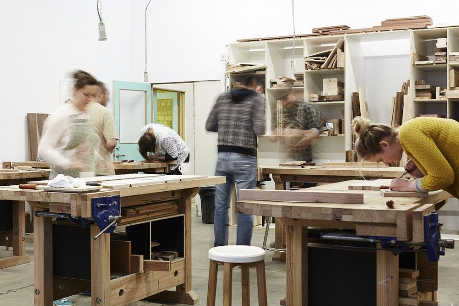

That's what we've built and we can't wait to share it with you.
Janine Appleton
Janine started out as a custom furniture manufacturer, but she quickly grew frustrated at having to spend a thousand dollars every time she needed a new specialty tool. That's when the idea for Toolshed was born.
"If we can have ride sharing and scooter sharing, I don't see why we shouldn't have tool sharing too."Janine Appleton
Our experts provide guides, videos, and live chat to help you get going on anything and everything.
No problem. Let us know what's up and send it back. We'll get you a replacement in no time flat.
Our rental insurance option protects you and covers the cost of the tool.